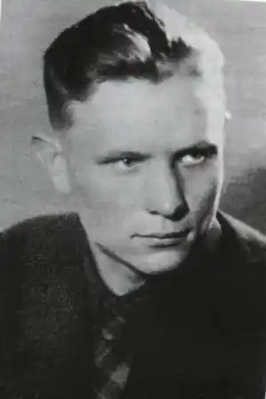

Максим Танк (Євген Іванович Скурко) (1912 — 1995) — білоруський поет і письменник.
Народився Євген 17 вересня 1912 року в селі Пільковщіна Білорусії. Потім брав участь у революції в Західній Білорусії. У біографії Максима Танка завжди активно виражалася громадянська позиція. За це він був заарештований в 1933, а також в 1934 роках. Перший опублікований збірник віршів в біографії М. Танка вийшов в 1936 році — "На етапах".
За ним пішов збірник "Журавлинний колір" в 1937, потім "Під щоглою" в 1938. У всіх цих книгах поет підтримував боротьбу народу за визволення рідної землі. Танк був кореспондентом в газеті "Вілейська правда", а в роки Великої Вітчизняної війни працював у пресі. Навіть у воєнні часи в біографії Танка письменницька діяльність не була залишена. У 1942 році він написав поему "Янук Сяліба", а в 1945 створив дві збірки віршів. Коли закінчилася війна, Танк став працювати в журналі "вожик" редактором, а пізніше — головним редактором (з 1948 по 1966) в журналі "Полум'я". За повну біографію Танка було створено безліч книг, поем, збірників. Серед відомих творів Танка — "Слід блискавки" (1957), "Ковток води" (1964), "Хай буде світло" (1972), "Ave Марія" (1980). Письменник має безліч звань і нагород. У 1948 році отримав Сталінську премію, в 1978 — Ленінську, а в 1968 — звання Народного поета Білорусі.